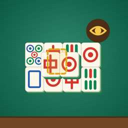

透かせる牌の積み取り
上の段を透かして、下に積まれた牌を読む。麻雀牌の積み取りパズルです。
何段にも積んだ麻雀牌の山から、同じ牌を2枚ずつ取っていくパズルです。取れるのは、上に何も乗っていなくて、左か右があいている牌です。全部取れたらおしまいです。
- 透かす：ボタンを押すと、上の段から1段ずつうすくなり、下に積まれた牌が見えます。同じ牌が真下に重なっていても、運ではなく読みで取る順を決められます
- 必ず解ける：どの面も、2枚ずつ取る順を先に決めてから牌を置いて作っているので、全部取れる取り方が必ずあります
- 詰んだ1手：手詰まりになったら、アプリが前の手から読み、「この2枚を取ったところで全部は取れなくなった」という1手を見せます。その前から打ち直せます
- 8つの山・120面。制限時間はありません。ヒント・1手もどす・はじめからは何回でも使えます
- 画面いっぱいの広告は出ません（画面のいちばん下の小さな広告だけです）。登録・課金はありません